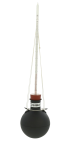
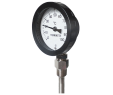

2023年
問題78 環境要素の測定に関する次の記述のうち，最も不適当なものはどれか．
（1）グローブ温度は，室内気流速度が小さくなるに伴い，平均放射温度に近づく傾向にある．
（2）超音波風速計は，超音波の強度と気流との関係を利用している．
（3）電気抵抗式湿度計は，感湿部の電気抵抗が吸湿や脱湿により変化することを利用している．
（4）バイメタル式温度計は，2種類の金属の膨張率の差を利用している．
（5）アスマン通風乾湿計の乾球温度は，一般に湿球温度より高い値を示す．
2023年
問題78 正解（2） 頻出度AAA
「超音波風速計」は，2023-78-1図の様な形状のセンサーを用い，超音波の到着時間の差を用いて流速を演算する．
出典 オセノン
http://www.osenon.com/jp/view.asp?/4.html
-(1) 「グローブ温度」（黒球温度ともいう）はグローブ温度計（2023-78-2図参照）で測った温度である．グローブ温度は，乾球温度と比べて体感温度により近い．

出典 柴田科学株式会社
https://www.sibata.co.jp/item/7868/
出典 公益社団法人
日本建築衛生管理教育センター
「新建築物の環境衛生管理第2版第1刷」中巻274
頁 図5-3-2(5)
グローブ温度計は薄銅板製の直径15cmの中空球体の表面を黒色つや消し塗りし，その中心にガラス管温度計の球部が達するように挿入したものである．
全方向から受ける熱放射を平均化した温度表示である「平均放射温度」\(MRT\)［℃］は，グローブ温度\(t_g\)を用いて次式で求めることができる． \[MRT=t_g+2.37 \sqrt{v} ~(t_g-t_a)\]
グローブ温度計はその構造上，示度が安定するまでには比較的時間を要する(15～20分間)ので，気流変動の大きい所での測定には不適当である．
-(3) 電気湿度計は，塩化リチウム等の吸湿性塩の電気抵抗変化を利用したもの，薄膜ポリマーフィルムの誘電体の誘電率が相対湿度で変化することを利用したもの等がある．遠隔測定，連続測定に適するが，センサー部の経年変化があるのでアスマン計などによる定期的な較正を必要とする．
-(4) バイメタル温度計は，2種類の金属の膨張率の差を利用している．
バイメタル式温度計は，膨張率の異なる2種類の金属（鉄・ニッケル合金とさらにマンガン，クロム，銅を添加した合金など）を貼り合わせ，温度による湾曲度の変化量から温度を求める（2023-78-3図参照）．

出典 有限会社横河計器製作所
https://yokokawakeiki.co.jp/product/thermo/item/?id=ATG
構造や原理はこちらのサイトが分かりやすい（旭計器工業株式会社 バイメタル温度指示計）．
-(5) アスマン通風乾湿計（2023-78-4図）は，湿球における水の蒸発量は気流によって異なるので，一定速度で回転するゼンマイ駆動又はモータ駆動の風車機構を内蔵する．湿球への通風速度は3m/s以上必要である．
出典 柴田科学株式会社
https://www.sibata.co.jp/item/598/ を基に作成
放射熱の影響を防ぐため温度計を挿入した金属管はクロームメッキを施されている．
測定点に設置し，通風開始後3分と4分の値を読み取り変化がなければ測定値とする．
相対湿度100％でない限り，湿球温度は常に乾球温度よりも低い値を示す．